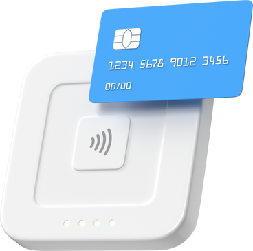

Votre planche de 6 photos d'identités et E-photos,
instantanément, pour tous vos documents officiels.
Service agrée ANTS
Prise de vue et impression instantanée.
Carte d’identité
Passeport
Permis de conduire (e-photo)
Titre de séjour (e-photo)
Linkedin portrait
Obtenez vos photos d'identités à l'endroit ou vous vous trouvez. Grâce à notre studio de photographie mobile, nous vous remettons instantanément vos photos d'identité, aux normes Normes ISO/IEC 19794-5. La prise de vue et l'impression se font sur place en 15 minutes maximum.
Vous ne pouvez pas vous déplacer ou vous n'avez pas le temps ?
Vous êtes hospitalisé, en invalidité ? Vous n'avez pas le temps de vous déplacer ?
Vous avez des enfants en bas âge ?
Vous pouvez faire appel à notre service pour obtenir vos photos d'identités en un temps record. La prise de vue et la livraison des photos d'identité se font sur place, instantanément.
Il vous suffit de nous appeler pour prendre rendez-vous, c'est simple, garantit et rapide.
Personne hospitalisée
Personnes à mobilité réduite
Nourissons, enfants en bas âge
Seniors ou personnes isolées
Profession libérale & professsionnels ne pouvant se déplacer
Un service fiable, habilité et adapté à votre situation, directement à l'Hôpital, en centre, en clinique, sur votre lieu de travail ou à votre domicile.
Comment fonctionne le service de photographie d'identité à domicile ?

👉 Le tarif pour une planche de 6 photos d'identité ou E-photo, est de 39 euros ttc.
👉 Le tarif de 39 euros comprend la prise de vue, le traitement des photos, le matériel de studio, l'impression des photos, l'imprimante et le papier, ainsi que le déplacement.
👉 Le tarif peut être dégressif pour plusieurs personnes lors d'un même rendez-vous.
Questions fréquentes sur les photos d'identité à domicile
Combien coûte une photo d'identité à domicile à Lyon et Lyon-Ouest ?
Le tarif est de 39€ pour une planche de 6 photos ou 4 e-photo numérisée ANTS, livrée directement en ligne. Nous nous déplaçons gratuitement sur Lyon et l'Ouest Lyonnais (Lyon, Tassin, Écully, Francheville, Craponne, Chazelle, etc.).
Supplément : de 29 euros pour un déplacement au-dela d'un rayon de 15 km. Formule urgente :
disponible à 75€ avec intervention sous 1h.
Ou faire des photos d'identité à Lyon ?
Vous pouvez vous rendre chez un photographe professionnel ou dans un photomaton, pour votre passeport et votre carte d'identité. Pour le permis de conduire et le titre de séjour il vous faut une photographie numérique (e-photo) aux normes ANTS. Si vous ne voulez pas ou ne
pouvez-pas vous déplacer, alors appelez-nous pour convenir d'un rendez-vous. Nous nous rendons à votre domicile, sur votre lieu de travail, à l'hôpital, en centre (...). La séance dure 20 minutes maximum et vos 6 photos vous sont remises instantanément pour 39 euros.
Une séance de photo d'identité à domicile dure combien de temps?
Une séance dure au maximum 20 minutes. Le montage du studio dure 5 minutes - la prise de vue dure 5 minutes - Le post-traitement de la photo, sa signature et son impression dure 10 minutes - le rangement dure 5 min.
Est-ce que le photographe à domicile est agréé ANTS ?
Oui, le photographe est agréé ANTS (Agence Nationale des Titres Sécurisés). Cela garantit que vos photos sont 100% conformes aux normes biométriques et seront acceptées par toutes les préfectures pour passeport, carte d'identité, permis de conduire, etc.
Quel est le délai pour obtenir vos photos d'identité ?
Nous intervenons sous 24h sur Lyon et Lyon Ouest. Pour les demandes très urgentes, nous proposons un service express sous 1h (supplément de 40€). Prise de vue et remise des photos instantanément et l'e-photo est envoyée sur votre boîte mail aussitôt.
Peut-on vraiment faire ses photos d'identité à domicile ?
Oui, c'est 100% légal et conforme. Nous utilisons un matériel professionnel agréé ANTS avec fond homologué et éclairage calibré. Le service à domicile vous fait gagner du temps et évite les déplacements, particulièrement pratique pour les personnes à mobilité réduite, les familles ou les
professionnels. Pour les e-photos des titres de séjour et permis de conduire, vous ne vous déplacez plus, toutes les démarches se font en ligne.